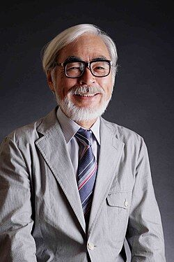

Hayao Miyazaki
Hayao Miyazaki (宮崎 駿, Miyazaki Hayao, nascido em 5 de janeiro de 1941, em Tóquio, Japão) é um diretor, animador e cartunista japonês. Ele adotou vários pseudônimos ao longo de sua carreira, tais como Saburo Akitsu (あきつ さぶろう), Tsutomu Teruki (照樹 務 , trabalhando na TMS Entertainment) e Miya Iwasaki. Ele é o co-fundador do Estúdio Ghibli e é o presidente da Fundação Cultural de animação Tokuma Memorial e do Museu Municipal de Animação de Arte Mitaka (Museu Ghibli). Ele também é um membro ativo da Fundação Totoro no Furusato.
Estudou Ciência Política e Economia na Universidade Gakushuin e posteriormente ingressou na Toei Animation em 1963 como animador. Depois disso, tornou-se um freelancer, eventualmente produzindo Future Boy Conan e dirigiu seu primeiro filme de animação teatral O Castelo de Cagliostro. Em 1984, ele, juntamente com Isao Takahata, Toshio Suzuki e Yasuyoshi Tokuma, co-fundou o Estúdio Ghibli. Quando Ghibli estabeleceu sua independência de Tokuma Shoten, em 2005, ele foi nomeado como Conselho de Administração.
Desde então, dirigiu inúmeros filmes de animação como My Neighbor Totoro, Kiki's Delivery Service, Howl's Moving Castle, The Wind Rises e Princess Mononoke e ganhou o Prêmio Urso de Ouro no Festival Internacional de Berlim e o Oscar de melhor longa-metragem de animação para A Viagem de Chihiro. Em 2014, ele se tornou o segundo japonês a ganhar o Oscar Honorary Award. Ele saiu da aposentadoria para trabalhar em How Do You Live?.
Ele vive em Tokorozawa, Saitama e é fumante. Ele é casado com Akemi Miyazaki e tem dois filhos, Goro Miyazaki e Keisuke Miyazaki. Ele anunciou sua aposentadoria após seu último longa-metragem, The Wind Rises. Ele saiu da aposentadoria para trabalhar em How Do You Live?.
Personalidade
Hayao Miyazaki é emocional e apaixonado, tem uma natureza humana ferozmente ondulante, é fortemente auto-afirmativo e tende a agir rapidamente, tem uma expressividade e curiosidade abundantes e possui uma imaginação tão viva que beira uma visão alucinatória. E é evidente que todas estas características estão em constante conflito com o eu do idealismo e da justiça, a fastidiosidade, a abnegação, o autocontrole e a auto-abnegação que o têm caracterizado desde sua juventude.
Pode-se até mesmo dizer que este conflito é o que cria seu próprio caráter complicado, porém atraente. Na verdade, uma forma de as pessoas que conhecem Miyazaki perdoarem algumas de suas declarações é dizendo: "Bem, ele é, afinal de contas, um pacote de contradições". Um contratado do Studio Ghibli disse uma vez que o segredo para se dar bem com Miya-san era o seguinte: "É melhor você não engolir tudo o que ele lhe diz hoje como está. Amanhã ele pode muito bem lhe dizer o contrário."
Postura política e ideológica
Bem & Mal
A maioria dos filmes de Miyazaki apresenta algum tipo de luta entre o bem e o mal. Por exemplo, em O Castelo de Cagliostro, Clarisse d'Cagliostro luta para salvar o Grão-Ducado Europeu de Gagliostro depois de ser invadido pelo Conde Cagliostro, e em Nausicaä do Vale do Vento, Nausicaä luta para salvar o Vale do Vento depois de ser invadido pelos Tolmekians. Também, em Castle in the Sky, Pazu deve salvar o Sheeta depois de ter sido capturado por Muska.
Meio ambiente
Vários dos filmes de Miyazaki entram na preocupação do homem com a natureza. Por exemplo, em Nausicaä do Vale do Vento, Nausicaä passa uma parte do filme fazendo pesquisas para encontrar uma cura para a toxina que assola suas terras. E na Princesa Mononoke, San, sendo criada por lobos, está muito zangada com os homens por destruírem suas florestas.
Anti-Guerra
Anti-Guerra é um grande tema tanto na Nausicaä do Vale do Vento quanto na Princesa Mononoke. Em ambos os filmes, os personagens principais estão tentando parar todas as guerras. Nausicaä quer impedir os animais de lutar, assim como a batalha principal contra os Pejitans e os Ohmu. Na Princesa Mononoke, Ashitaka tenta acabar com o conflito entre Irontown e a floresta.
Política
O interesse inicial de Miyazaki pelo marxismo é visível em alguns de seus filmes, tais como Porco Rosso. Em Castle in the Sky, a classe trabalhadora é retratada em termos idealizados.
A Guerra Fria é um pano de fundo para O Castelo de Cagliostro, onde o plano de Zenigata de mobilizar o ICPO contra o Conde Cagliostro falha quando os delegados soviéticos e americanos acusam um ao outro da operação de falsificação. A divisão de classes é mostrada no filme, contrastando o Conde que hospeda um banquete luxuoso no castelo com a polícia japonesa comendo ramen barato lá fora.